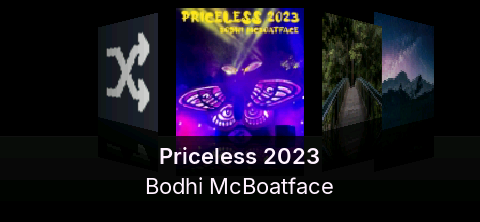
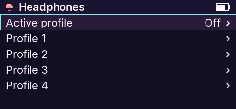

Browse music
Browse covers, search by tag, or open a Smart List.
Firmware features
Browse albums in Cover Flow, edit Up Next, and save sound settings for each pair of headphones.

Browse covers, search by tag, or open a Smart List.

Reorder Up Next and save a mix to play again.

Keep trim, balance, and a volume ceiling for each pair.
The comparison uses FiiO ECHO 2.0.0. FiiO’s firmware includes M3U playlists, song favorites, EQ, gain, five DAC filters, Bluetooth, and USB DAC mode.
Browse albums, search for a song, or narrow a long list. Personal labels help organize music without editing the files.
echo-sync tool. Prepare the library →
Gapless playback joins tracks without adding a pause, so a live album or continuous mix keeps flowing. Compatible tracks need the same sample rate. Gnarlyr builds on playback support from Podium and EchoPod.
Up Next is your current play order. Save it as a named mixtape to return to it later. Changing Up Next leaves the saved mix alone until you save over it.
Adjust the sound while music plays, follow the lyrics, and see what you listen to most.
Open Recap and choose Export plays to save an Audioscrobbler-compatible .scrobbler.log. Plays logged while the clock is set have UTC timestamps. Copy the file over USB and submit it to Last.fm with a compatible tool on your computer. See the Recap guide →
Browse shows and books on dedicated shelves, pick up where you left off, and listen at your own pace.
Podcasts/Show name/ and books in Audiobooks/ at the top of the microSD card or internal drive. The folder names are case-insensitive, and Podcast and Audiobook work too. Those names classify files only at the top level. M4B files elsewhere also appear in Audiobooks. Open either shelf from Music or show it on Home in Settings → Display & text → Home screen.echo-sync index the same chapters. Nested resume still needs a check on the player.Use M4A or M4B files containing mono or stereo AAC-LC or Apple Lossless (ALAC) audio. Convert HE-AAC or xHE-AAC files to a supported format before copying them. Check the codec as well as the filename extension.
Gnarlyr resamples supported 8 and 16 kHz recordings to 32 kHz, 11.025 and 22.05 kHz to 44.1 kHz, and 12 and 24 kHz to 48 kHz. The 32 kHz output clock and seamless transitions between converted files still need listening checks on the player. See how resampling works →
M4B chapter indexing reads Nero chapter lists and QuickTime chapter tracks, up to 255 chapters per book. An M4B with no usable chapter list plays as one book and keeps its own place. Keep the file path to retain its bookmark.
Rescan on the player or run echo-sync after you add episodes or books or change chapter information.
Choose a readable layout, assign button shortcuts, and use the interface in your preferred language.
Use the ECHO as a player, a USB drive, or a USB audio (DAC) for your computer’s audio. Switch USB modes without removing the cable.
Everyday updates use the player’s updater. Developer builds add a computer-assisted loop for copying, checking, ejecting, and restarting.